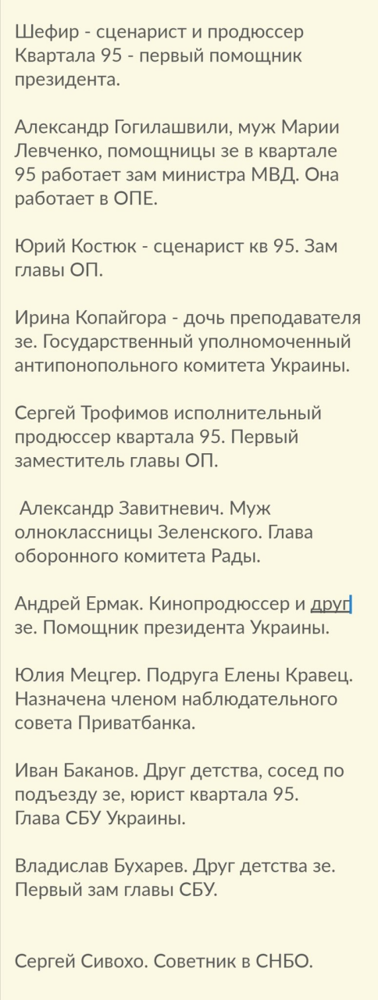

02.04.2020
Нікому не відомій 22-річній членкині наглядової ради державна залізниця призначила зарплату в 160 тисяч гривень »»»
UPD: Автори інформації про це призначення збрехали в деталях але поширили правдиву інформацію по суті: нікому не відома дівчинка без досвіду та відповідної освіти стає членом наглядової ради державного підприємства »»»
Отже, після того, як скінчилася "епоха кумівства" люди як і раніше з незрозумілих причин, за непрозорими процедурами, як призначались на державні посади, так призначаються й далі!
UPD: До речі, а чи це не та сама "дєвачка" з записів Єрмака?
Ексміністр фінансів Уманський викрив корупцію в Кабміні - 5 млрд гривень на місяць втрачає бюджет »»»
03.04.2020
Нормы антикоронавирусного закона ПОДМЕНИЛИ после подписания Закона Зеленским!!! »»»
Когда у власти наперсточники государственного масштаба!
Україна допоможе Італії у боротьбі з епідемією коронавірусу лікарями і спиртом, - Зеленський підписав указ »»»
05.04.2020
Разумков пролобіював роботу ломбардів на час карантину, оскільки це його сімейний бізнес »»»
06.04.2020
Зеленский заявил, что не намерен отзывать подписи Ермака и представителя Украины Кучмы под договоренностями с боевиками »»»
Коломойський блокує отримання грошей МВФ, без яких на Україну чекає катастрофа »»»
UPD: До "антиколомойського" законопроєкту внесли рекордну кількість правок »»»
UPD: Тисячі правок "антиколомойського" закону: повний перелік депутатів, які їх подали »»»
UPD: «Я не рахувала». Депутатка Слуги народу прокоментувала, скільки внесла поправок у «антиколомойский закон» »»»
UPD: Нардеп Поляков висунув умови відкликання своїх правок до "антиколомойського" закону
Той випадок, коли "бабло побєждаєт всьо"! У тому числі й здоровий глузд!
Поліція склала 9 адмінпротоколів на учасників акції під ОП »»»
З початку карантину на порушників складено 3922 протоколи, відкрито 46 кримінальних проваджень »»»
Ось хто у нас заробляє на карантині!
Безкоштовно від коронавірусу лікуватимуть не всіх: глава МОЗ дав роз’яснення »»»
Медичне обслуговування й лікування під час пандемії в Україні офіційно стає ПЛАТНИМ! Дякую, дуже дякую!
На Рівненщині від лікарні вимагали здати захисні костюми, отримані після виступу Зеленського »»»
Клоун під камери роздає захисні костюми(куплені за державні кошти), а потім, коли камери виключаються, то до лікарів звонять та кажуть, нічого не використовувати і взагалі все здати, добре що люди підняли скандал! Тепер ОДА "морозиться" і заявляє, що то все вигадки!
Доплати медикам за лікування хворих на коронавірус уряд перекладає на місцеві бюджети »»»
Минулого тижня Президент Зеленський в роликах та зверненнях всім розповідав про те, що держава доплатить медикам і нарешті українці відчують опіку. Однак, Міністерство охорони здоров’я вимагає доплату медикам із місцевих бюджетів, замість того, щоб виплатити ці кошти з державного!
07.04.2020
Генпрокурорку Венедіктову цікавить покарання українських активістів, а не російських кілерів »»»
У Зеленского предложили выпустить заключенных из тюрем из-за коронавируса »»»
«Тaкиx жлoбiв у нaшoму мicтi щe нe булo!» У Мepeжi poзкpитикувaли дoпoмoгу Кpивoму Рoгу вiд нapдeпa «Юзiкa» »»»
"Краще б безкоштовно маски роздавали, чим це... На газетку гроші знайшли, бл*дь...": "Слуга народу" надіслала незвичайну "гуманітарку" на Дніпропетровщину »»»
Борьба с эпидемией: офис Зеленского помог больницам Одесской области... листовками »»»
“Слуга народу” поки не буде відмовлятись від держгрошей, незважаючи на обіцянку »»»
UPD: Як слуги народу надурили українців на 300 млн »»»
За прогулянку по лісі 17000 грн, а за вирубку ноль! Як український ліс їде в Європу »»»
08.04.2020
Из Киева в Италию отправили самолет с 5 тоннами антисептика »»»
Українців уже всіх забезпечили? Чи українцям не потрібно?
Офіс Генпрокурора відкрив справу проти Порошенка »»»
Тільки призначили і одразу портновська марамойка побігла виконувати замовлення від зеленої банди! Нічого дивного, зеленій банді не треба закон, їм треба прокурор, який буде виконувати накази! Неправомірне призначення суддів, що мало на меті захоплення державної влади (у кого? у самого себе?) - це і є той самий "юридичний треш", на який не піднялася рука навіть "100%-го прокурора" Рябошапки! Це і є визнання того, що по факту "розкрадання країни" навіть у зеленої банди НЕМАЄ НІ-ЧО-ГО!
UPD: Венедіктова відкрила п'ять справ проти Порошенка »»»
Як крадуть в оборонних закупівлях за Зеленського: "Арей" завіз броню втричі дешевшу, ніж у "Козаків" - фінансування припинили для "Арея" »»»
Чи успішні дії Зеленського під час пандемії? Громадська думка і думка експертів »»»
Пока людям не за что жить, таможенник Нефедов и три его зама получили 300-процентную надбавку »»»
Україна дарує 10.000.000 грн Албанії (WTF!) »»»
Лікарі самі собі шиють маски, а зевлада тим часом розбазарює гроші з держбюджету направо й наліво!
09.04.2020
У Раді підтримали дозвіл нацгвардійцям проводити обшук українців під час карантину »»»
Держава поступово перетворюється на поліцейську. Повільно так, щоб ви не відчули різких змін. Здобули?
Онлайн-школа Зеленського «переселила» білого ведмедя в Антарктиду »»»
А какая разніца!
Уряд пропонує збільшити витрати на президента і силовиків за рахунок Фонду боротьби з COVID-19 »»»
Ну так не може ж "прастой парєнь із народа" жити не в розкошах!
10.04.2020
Новий Міністр оборони скасував указ про реформу армії »»»
UPD: Міністр оборони Таран працює на РФ »»»
З МОЗ вивозять китайські тести на коронавірус на приватних автомобілях »»»
11.04.2020
Зеленський на лінії розведення в ООС: Ми працюємо над узгодженням нових ділянок »»»
13.04.2020
Країна отримала бюджет від Зеленського з дірою у 300 млрд. гривень »»»
14.04.2020
Влада відмовилася доставляти медикам захист, закуплений фондом Порошенка »»»
Ліси палають, вогонь підбирається до зони радіоактивного ураження, а призЕдент просто "стежить":
UPD: Зеленського різко розкритикували за запізнілу “стурбованість” щодо пожежі в Чорнобилі »»»
15.04.2020
“Мu не будемо nрацюватu за 47 тuсяч грuвень! Це свавілля!” Судді в Україні влаштувалu бунт і наnuсалu звернення »»»
В’ятровича викликали на допит у ДБР у справі проведення форуму до 85 роковин Голодомору »»»
UPD: В’ятрович розповів подробиці допиту в ДБР »»»
КСУ вернул судьям право на получение бесплатного жилья »»»
При ТАКИХ, як у них зарплатах, вони не можуть собі придбати житло за свої???
16.04.2020
СБУ закрила провадження щодо погроз Портнова прокурору Божку »»»
СБУ рятує портнова з формулюванням "відсутність складу кримінального правопорушення"
“Як нардеп “допоміг” лікарні”: Дубінський продав б/у апарати ШВЛ по ціні нових »»»
Усе, що треба знати про теперішню владу!
17.04.2020
Путін та Макрон обговорили війну на сході України »»»
Знову про Україну без України!
Верховний головнокомандувач так боїться СВОЇ армії, що проводить військові навчання, що у всіх бійців відібрали боєкомплекти?
За перший квартал 2020 року в корупціонерів конфіскували 14 тис.грн »»»
ЗА! ТРИ! МІСЯЦІ! Люди з зарплатами, які вимірюються СОТНЯМИ ТИСЯЧ гривень, напрацювали суму, що дорівнює половині вартості нормального смартфона в Україні!
Єрмак та посадовці податкової вкрали у держави 25 млрд. гривень »»»
"Обман пленными" или кто и зачем устроил пародию на обмен пленными? »»»
UPD: Помилуваного Зеленським під обмін не впустили на Росію і він повернувся до грабежів у Києві »»»
UPD: Ситуація з обміном полонених на межі, Зеленського вивели на чисту воду: "Це люди, які не мають відношення до конфлікту" »»»
18.04.2020
Зеленський порівняв партію “Слуга народу” з кораблем, який хочуть потопити “акули” »»»
Як і прогнозувалось, клоун вже каже, що його партії не дають працювати, тобто він сам набрав це стадо, яке завів у Раду, стадо обгидилось, але винні у цьому хто завгодно, тільки не клоун зі своєю партією
Ви за це голосували? Точно?
Вчителі не отримають обіцяної Міносвіти доплати у 21 тисячу гривень »»»
19.04.2020
Зеленский уволил контрразведчика СБУ, который задержал "жирного" российского шпиона »»»
UPD: Зеленський заборонив СБУ розслідувати деталі своєї поїздки в Оман? »»»
"Слуга народу" Литвиненко хоче узаконити полювання для розваги в заповідниках »»»
Потвори, зрадики і вбивці, обрані до влади "найрозумнішою" більшостю знищують усе - Україну, тварин... Їм усе мало!
Минув рік з дня дебатів на стадіоні
20.04.2020
Суд відмовив САП у арешті Микитася »»»
Особа, що підозрюється в розкраданні української армії, тепер на свободі. А як же "свинарчуки"?
22.04.2020
Президент на раз. Перший рік Зеленського »»»
Одноразовий презервадент! От уже дійсно! Влучніше не скажеш!
Зеленський зняв фільм про себе і обіцяє пресконференцію »»»
В країні епідемія! В країні тяжка економічна криза! В країні масове безробіття! Країна на межі дефолту! Країна на межі енергетичного колапсу! В країні масово палають ліси! В країні ВІЙНА! Що в цей час робить призЕдент? В кіно знімається!!!
23.04.2020
Грузите тесты, Вова! Они золотые! »»»
24.04.2020
«30 тис. грн. я витратила з сімейного бюджету на свою роботу», – мовна омбудсменка зі скандалом звільнилася »»»
Вчитайтеся! Ось ТАК зеленську владу, насправді, турбує проблема державної мови!
25.04.2020
Венедіктова готує підозру Порошенку, Турчинову та Воронченку за кораблі у Керченській протоці »»»
Кабмін вирішив підвищити зарплати митникам »»»
26.04.2020
Коломойський готує арешт мера Дніпра Філатова, для цього перевів “свого” прокурора з Миколаєва »»»
Кабмін дозволив призначити голову податкової без конкурсу »»»
28.04.2020
«Усі тварини рівні, але деякі тварини рівніші за інших». Попри карантин ресторан "слуги народу" Миколи Тищенка працює і приймає відвідувачів »»»
А Слугам Народу закони не писані!
UPD: Колектив ресторану "Велюр" не отримав штрафу навіть у 17 тисяч гривень »»»
UPD: Ресторан Тищенка на карантині як відображення плювка влади в обличчя українцям »»»
UPD: За порушення карантину: Ляшко замурував ресторан Велюр нардепа Тищенка 😃 »»»
Гра в патріотизм скінчилася. Держава повністю перейшла під правління антимайдану »»»
29.04.2020
Чоловіка головного бухгалтера "95 кварталу" призначено директором департаменту стратегічної агентурної розвідки ГУР МОУ »»»
Нічого нового. Це так виглядає зеленська "боротьба з кумівством". Не дякуй.Те!

30.04.2020
Медикам замість 300% надбавки до зарплати дають 100 гривень за роботу з пацієнтами, у яких COVID-19 »»»
Прем'єр Шмигаль заявив, що уряд готовий торгувати робочою силою на міжнародному ринку офіційно »»»
Шановні кріпаки, хочемо повідомити вам радісну звістку. Служба зайнятості «Yermak Brothers» (YeBs) вийшла на міжнародний рівень! У пана Єрмака ви вже можете придбати довгоочікувану посаду збирача клубники у Фінляндії. Також скоро очікується збирач апельсинів у Іспанії і пакувальник зубних щіток у Польщі! Не дякуй.Те!
"Слуги народу" перешкоджають розгляду закону про страхування медиків »»»
УСІ (!!!) фракції й депутатські групи парламенту підтримали ініціативу ЄС щодо страхування лікарів, які борються з коронавірусом! ПРОТИ - лише команда Зеленського!
Школа онлайн: замість уроку про російську агресію показали відео з ватником-Усиком »»»
UPD: МОН пояснило, чому замість уроку про російську агресію показали відео з Усиком »»»
Ага! Усі уроки встигли змонтувати, а САМЕ ЦЕЙ - ні! Ну якщо вже Міністерство ОСВІТИ починає БРЕХАТИ, то капець тоді усій нашій освіті!
Украинцев начали штрафовать за оскорбление Зеленского »»»
58,4 мільйона гривень витрачено в березні 2020 на утримання Зеленського і його офісу »»»
Слуга Народу Верещук Ірина виявилась протеже Козака та Медведчука »»»